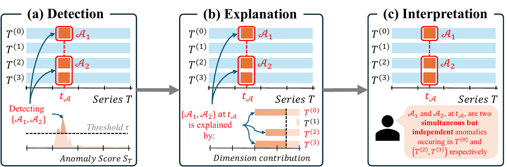
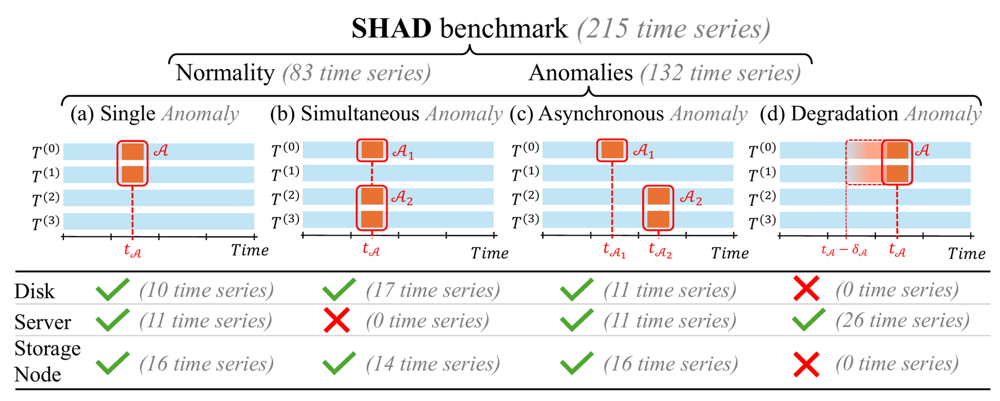
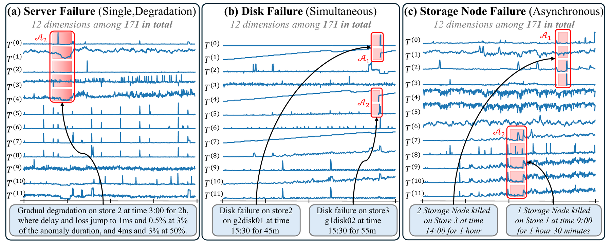
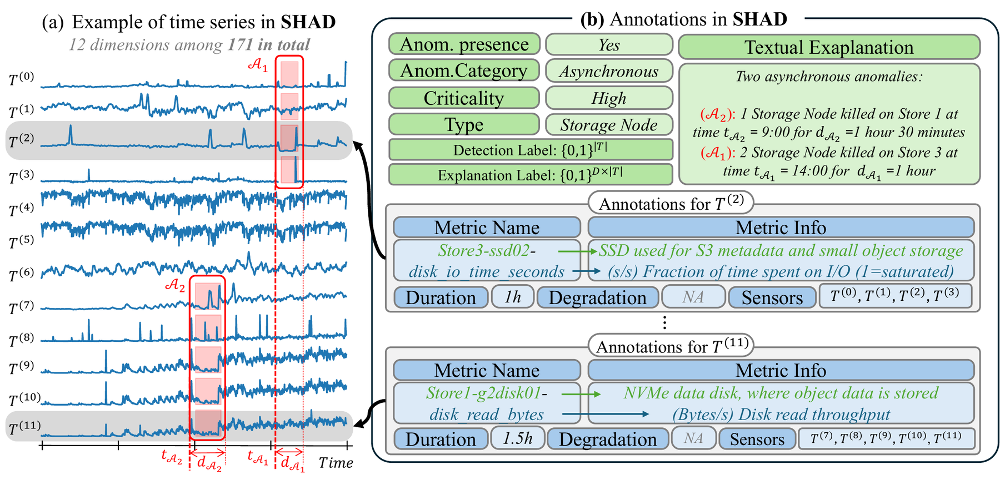
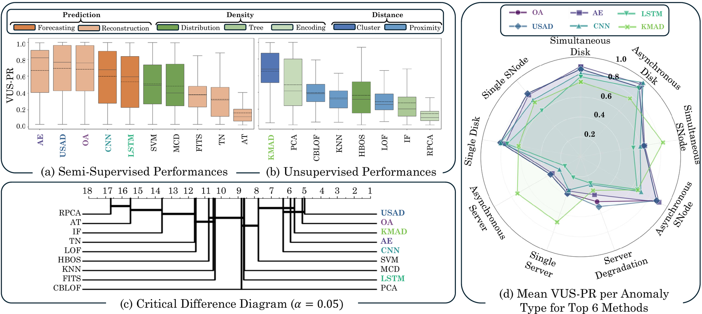
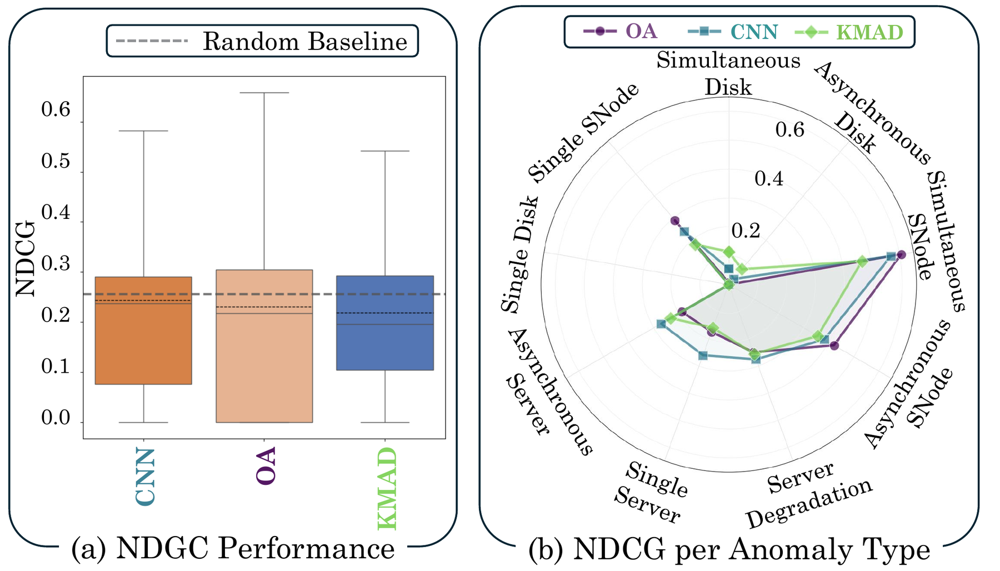
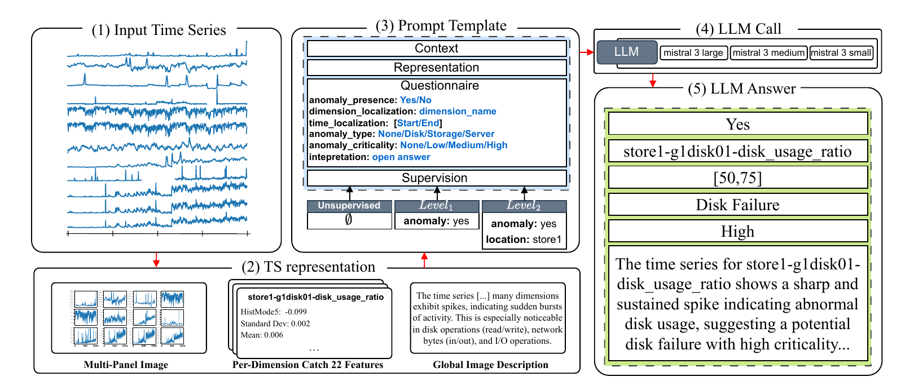
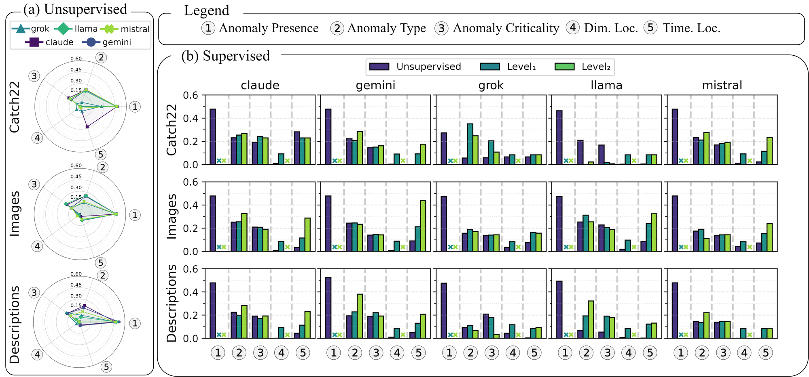

Detect, Explain, Interpret.
An end-to-end benchmark for time series anomaly detection, explainability and interpretability
SHAD (Scality High-dimensional Anomaly Detection) is a fully annotated benchmark of real-world, 171-dimensional time series collected on a distributed cloud storage system (Scality RING), with per-dimension labels and rich semantic annotations of every injected disk, server and storage node failure.
Beyond detection accuracy
Existing anomaly detection benchmarks only tell when something went wrong. SHAD also records where (which of the 171 sensors are directly affected) and what (type, target component, severity, textual explanation), so that a complete pipeline can be evaluated.

Detection
Locate anomalies in time. Top-level binary labels, compatible with existing benchmarks such as TSB-AD. 18 detectors evaluated with VUS-PR.
Explanation
Attribute an anomaly to the dimensions that cause it. Per-dimension labels mark the root cause sensors of every event; evaluated with NDCG.
Interpretation
Produce a human-understandable account: type, criticality, affected component. XML annotations provide the ground truth; frozen LLMs evaluated.
215 series, 10 scenarios, 3 anomaly families
Every experiment runs the same GET-heavy S3 workload for ~18 hours (1-minute sampling). Anomalies are injected on top of it and annotated by Scality experts. All statistics below are computed from the released files.
Every series of SHAD, one row each
Coloured spans are the labelled anomalous periods (top-level label). Hover for details, click to open the series in the explorer.
Series per scenario
83 nominal series (training data) and 132 anomalous series.
Duration of anomalous periods
Each dot is one labelled anomalous period (minutes, log scale).
Fraction of anomalous timestamps
Each dot is one anomalous series (top-level label). Outlined dots above 50% are runs where the injected failure could not be recovered, so a large part of the series is anomalous; they are annotated in the repository and still represent a realistic scenario.
Number of labelled dimensions
Dimensions with a positive per-dimension label, out of 171 (log scale).
Which dimensions are labelled, per scenario?
Share of the series of each scenario in which a dimension carries a positive per-dimension label. Columns are the 171 dimensions, grouped by level. Hover a cell for details.
A real distributed object store under controlled failures
Each cluster runs Scality RING with one supervisor and three storage servers. Data placement follows a Chord distributed hash table over 18 software storage nodes; S3 traffic enters through one connector per server. All components expose telemetry, organised into 171 metrics on four levels.
Realistic failures across architectural layers
Failures are injected at a chosen time, for a chosen duration, on chosen components. Multi-event scenarios are simultaneous or asynchronous (cascading, rolling or independent); server failures can also be progressive degradations.

- NVMe data disk detached from the OS (driver unbind)
- Single, simultaneous (2–4 disks) or asynchronous
- Subtle: RING is resilient by design; affects ~4–16 dimensions
- Some disks never recover (permanent loss)
- Network partition of a storage server (tc/netem, 100% loss)
- Single, asynchronous, or linear / staged degradation of delay and loss
- System-wide impact on most metrics
- 1–3 software storage nodes killed (SIGABRT) on a server
- Single, simultaneous or asynchronous
- Smallest impact: the DHT redistributes the keyspace
- 16 early runs have broken telemetry (flagged)

Examples of disk, server and storage node failures (from the paper).
Labels you can reason about
Two label layers ship in every CSV (top-level and per-dimension), and every series has an XML file describing the anomaly and each of the 171 dimensions: what it measures, which event affected it, and which other dimensions were affected by the same event.

In the CSV files
metric_timestamp: UTC timestamp, 1-minute resolution- 171 metric columns (platform, S3, server, device levels)
- 171
label_<metric>columns: 1 when the dimension is a root-cause target of an ongoing anomaly label: 1 when any anomaly is ongoing (logical OR of the above)
In the XML files
- anomaly presence, category, type, criticality, textual explanation
- per-dimension description, and for anomalous dimensions: onset, duration, targeted store / disk, degradation level, related dimensions
Annotations/1773343796.xml (excerpt)
<dataset>
<id>1773343796</id>
<anomaly_presence>true</anomaly_presence>
<category>Single</category>
<type>Disk</type>
<criticality>Low</criticality>
<textual_explanation>ran on quarry4 starting at 2026-03-12 19:29,
with a failure on store 1 g2disk01 at time 3h30m for 1h30m</textual_explanation>
<dimensions>
<dimension>
<name>store1-g2disk01-disk_read_bytes</name>
<description>(bytes/s) Disk read throughput.</description>
<anomalies>
<anomaly>
<offset_minutes>210</offset_minutes>
<duration_minutes>90</duration_minutes>
<store>1</store>
<disk>g2disk01</disk>
<degradation></degradation>
<related_dimensions>
<dimension>store1-g2disk01-disk_io_time_seconds</dimension>
<dimension>store1-g2disk01-disk_read_bytes</dimension>
...
SHAD is far from solved
We evaluate every stage of the pipeline. Detection is accurate but not uniformly so, native attributions are no better than random, and zero-shot LLMs cannot interpret the anomalies.




Three lines to your first series
git clone https://github.com/scality/shad.git cd shad pip install -e . # numpy + pandas (add [plot] for matplotlib) python -m shad # prints a summary of the dataset
from shad import SHAD
ds = SHAD() # finds the repository
s = ds.load("1773343796") # a single disk failure
s.data # (1039, 171) telemetry, UTC DatetimeIndex
s.labels # (1039, 171) per-dimension labels
s.label # (1039,) top-level label
s.events # annotated events: store1/g2disk01, 210 min, 90 min
train_ids, test_ids = ds.split() # 83 nominal / 132 anomalous
Resources
- Documentation: installation, data format, labels, XML schema
- Dictionary of the 171 metrics
- Catalog of the 215 experiments
- Getting-started notebook
- A 60-line baseline detector
- TSB-AD for the detector implementations and VUS-PR
Cite SHAD
If you use SHAD in your research, please cite:
@inproceedings{stanzione2026shad,
title = {Detect, Explain, Interpret: An End-to-End Benchmark for Time Series
Anomaly Detection, Explainability and Interpretability},
author = {Stanzione, Roberto and Barbe, Jules and Parrino, Magali and
Fourmann, J{\'e}r{\'e}mie and Boniol, Paul},
booktitle = {Advances in Neural Information Processing Systems (NeurIPS),
Evaluations and Datasets Track},
year = {2026}
}